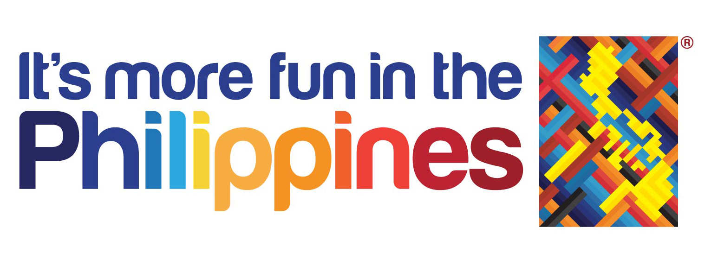

DISCLAIMER
This website was created to comply with the requirements of Tuitt Coding Bootcamp. Words and images are credited in each pages.


ABOUT MANILArt
MANILArt is an arts and humanities website which aims to promote the history and culture of Manila.
